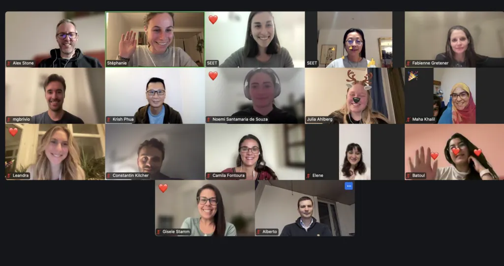

Der Frühling ist bekannt als die Jahreszeit des neuen Lebens und des Nachwachsens, in der die Natur nach den kalten Wintermonaten wieder erwacht und neue Kraft schöpft. Wiederbelebung ist auch eine treffende Beschreibung für die Aktivitäten bei SEET in den letzten sechs Wochen.

Nach Abschluss des SEET-Studienförderprogramms 2024/25 Ende Februar trafen sich die SEET-Mitglieder online zur jährlichen Mitgliederversammlung, um die vergangenen zwölf Monate zu reflektieren. Auf der Tagesordnung standen neben der Verabschiedung des Jahresberichts 2024 auch die Überprüfung der strategischen Prioritäten der Organisation und die Wahl neuer Vorstandsmitglieder.
Eines der Hauptziele des SEET-Vorstands ist es, mehr Vielfalt und Erfahrung zu gewinnen, um eine Vision zu unterstützen, die unseren Werten und unserer Geschichte treu bleibt, und sich gleichzeitig auf zukünftige Herausforderungen und Wachstum vorzubereiten.
In einer Reihe von einstimmigen Abstimmungen wurden Nora Diethelm (Leiterin des Programmteams und Co-Präsidentin), Jaqueline Sun (Leiterin des Fundraising- und Partnerschaftsteams), Noemi Santamaria de Souza (SEET-Mitbegründerin und ehemalige Leiterin des Programmteams), Constantin Kilcher (SEET-Mitbegründer mit Erfahrung im Programm- und Finanzteam) und Batoul Tak Tak Paskhori, eine aktive Mentee mit einer unschätzbaren Perspektive für das SEET-Studienförderprogramm, in den Vorstand gewählt.
In der darauffolgenden Woche trafen sich Vertreterinnen und Vertreter der jeweiligen operativen SEET-Teams an einem Samstagmorgen an der ETH Zürich zu einem Workshop über Fundraising-Partnerschaften. Nach vier Stunden Debatte und Gruppendiskussion wurden die folgenden vier Ziele vereinbart:
Priorisierung von Faktoren, die das erfolgreiche Lernen und die persönliche Entwicklung von Mentees im SEET-Studienförderungsprogramm unterstützen.
Stärkung der operativen Exzellenz von SEET durch Verbesserung der Effizienz und der internen Kommunikationsprozesse.
Nutzung des einzigartigen SEET-Wertversprechens als Grundlage für die Anbahnung strategischer Partnerschaften, die Unterstützung der Mentees durch Netzwerkveranstaltungen und die Bereitstellung von Produkten (z.B. Laptops) und Dienstleistungen (z.B. Deutschkurse).
Ausweitung der Präsenz und der Bildungspartnerschaften von SEET über den Kanton Zürich hinaus, um der steigenden Zahl von Bewerbungen von Mentees aus der ganzen Schweiz gerecht zu werden.
Am Freitag, 23. Mai findet an der ETH Zürich wiederum die Auftaktveranstaltung des SEET-Studienförderungsprogramms 2025/26 statt. Die Mentees und ihre Mentorinnen und Mentoren, unterstützt von einer grossen Kohorte der ehrenamtlich geführten SEET-Organisation, treffen sich zum ersten Mal und starten in eine hoffentlich für beide Seiten bereichernde persönliche Erfahrung. Im letzten Jahr kamen unsere Mentees aus Ländern wie Afghanistan, Syrien, Nigeria, Türkei, Ukraine, Georgien, Sudan, Iran und der Volksrepublik China.
Wir bei SEET glauben, dass Bildung das stärkste Instrument für Integration, Veränderung und Frieden ist. Wir füllen die Lücke in der Unterstützung und Integration von Geflüchteten in die Schweizer Hochschullandschaft, indem wir Barrieren abbauen und sie befähigen, ihre akademischen Ziele zu erreichen und selbstbestimmt zu leben. Es gibt keine andere Organisation in der Schweiz, die sich wie SEET für Geflüchtete einsetzt. Wenn Sie als Privatperson oder Organisation unsere Werte teilen und Geflüchtete in der Schweiz dabei unterstützen möchten, ihr akademisches und berufliches Potenzial auszuschöpfen, würden wir uns freuen, von Ihnen per E-Mail zu hören: seet@seet.ch.
Spring is known as the season for new life and regrowth, during which the natural world revives and reinvigorates after the colder winter months. Reinvigoration is also an accurate description of SEET’s activities during the last six weeks.
Following the conclusion of SEET’s 2024/25 study support programme at the end of February, members of SEET gathered online for the annual general assembly to reflect on the previous twelve months. As well as approving the 2024 annual report, the agenda also encompassed a review of the organisation’s strategic priorities, and the election of new board members.
A key goal for the SEET board is to focus on attracting further diversity and experience to support a vision faithful to our values and history, whilst also preparing for future challenges and growth.
In a unanimous series of votes, Nora Diethelm (Program team lead and Co-President), Jaqueline Sun (Fundraising and Partnership team lead), Noemi Santamaria de Souza (SEET co-founder and former Program team lead), Constantin Kilcher (SEET co-founder with experience of the Program and Finance teams), and Batoul Tak Tak Paskhori, an active mentee with an invaluable perspective of SEET’s study support programme, were all elected to the board.
The following week, representatives spanning SEET’s respective operational teams met on a Saturday morning at the ETH in Zürich for a workshop focused on fundraising partnerships. After four hours of debate and group discussion, the following four objectives were agreed:
To prioritize factors to support the successful learning and personal development of mentees on SEET’s study support programme.
To strengthen SEET’s operational excellence by improving efficiencies and internal communication processes.
To utilise SEET’s unique value proposition as the basis for targeting strategic partnerships, supporting mentees through networking events and the provision of products (e.g. laptops) and services (e.g. German language courses).
To extend SEET’s footprint and educational partnerships beyond the canton of Zürich, reflecting the increasing number of Swiss-wide mentee applications.
On Friday 23 May, the ETH will once again play host to the kick-off event of SEET’s 2025/26 study support programme. Mentees and their mentors, supported by a large cohort of SEET’s volunteer-run organisation will meet for the first time together, beginning what we hope will be a mutually rewarding and enriching personal experience. Last year, our mentees came from as far afield as Afghanistan, Syria, Nigeria, Turkey, Ukraine, Georgia, Sudan, IR Iran and China PR.
SEET believes that education is the most powerful tool to integration, change and peace. We fill the gap in the support and integration of refugees in the Swiss higher education landscape, reducing barriers and empowering them to achieve their academic goals and increase their self-determination. There is no other organisation in Switzerland that helps refugees like SEET does. If you are a private individual, or an organisation that shares our values, and wish to support refugees in Switzerland to realize their academic and professional potential, we would love to hear from you via email: seet@seet.ch
Der Frühling ist bekannt als die Jahreszeit des neuen Lebens und des Nachwachsens, in der die Natur nach den kalten Wintermonaten wieder erwacht und neue Kraft schöpft. Wiederbelebung ist auch eine treffende Beschreibung für die Aktivitäten bei SEET in den letzten sechs Wochen.
Nach Abschluss des SEET-Studienförderprogramms 2024/25 Ende Februar trafen sich die SEET-Mitglieder online zur jährlichen Mitgliederversammlung, um die vergangenen zwölf Monate zu reflektieren. Auf der Tagesordnung standen neben der Verabschiedung des Jahresberichts 2024 auch die Überprüfung der strategischen Prioritäten der Organisation und die Wahl neuer Vorstandsmitglieder.
Eines der Hauptziele des SEET-Vorstands ist es, mehr Vielfalt und Erfahrung zu gewinnen, um eine Vision zu unterstützen, die unseren Werten und unserer Geschichte treu bleibt, und sich gleichzeitig auf zukünftige Herausforderungen und Wachstum vorzubereiten.
In einer Reihe von einstimmigen Abstimmungen wurden Nora Diethelm (Leiterin des Programmteams und Co-Präsidentin), Jaqueline Sun (Leiterin des Fundraising- und Partnerschaftsteams), Noemi Santamaria de Souza (SEET-Mitbegründerin und ehemalige Leiterin des Programmteams), Constantin Kilcher (SEET-Mitbegründer mit Erfahrung im Programm- und Finanzteam) und Batoul Tak Tak Paskhori, eine aktive Mentee mit einer unschätzbaren Perspektive für das SEET-Studienförderprogramm, in den Vorstand gewählt.
In der darauffolgenden Woche trafen sich Vertreterinnen und Vertreter der jeweiligen operativen SEET-Teams an einem Samstagmorgen an der ETH Zürich zu einem Workshop über Fundraising-Partnerschaften. Nach vier Stunden Debatte und Gruppendiskussion wurden die folgenden vier Ziele vereinbart:
Priorisierung von Faktoren, die das erfolgreiche Lernen und die persönliche Entwicklung von Mentees im SEET-Studienförderungsprogramm unterstützen.
Stärkung der operativen Exzellenz von SEET durch Verbesserung der Effizienz und der internen Kommunikationsprozesse.
Nutzung des einzigartigen SEET-Wertversprechens als Grundlage für die Anbahnung strategischer Partnerschaften, die Unterstützung der Mentees durch Netzwerkveranstaltungen und die Bereitstellung von Produkten (z.B. Laptops) und Dienstleistungen (z.B. Deutschkurse).
Ausweitung der Präsenz und der Bildungspartnerschaften von SEET über den Kanton Zürich hinaus, um der steigenden Zahl von Bewerbungen von Mentees aus der ganzen Schweiz gerecht zu werden.
Am Freitag, 23. Mai findet an der ETH Zürich wiederum die Auftaktveranstaltung des SEET-Studienförderungsprogramms 2025/26 statt. Die Mentees und ihre Mentorinnen und Mentoren, unterstützt von einer grossen Kohorte der ehrenamtlich geführten SEET-Organisation, treffen sich zum ersten Mal und starten in eine hoffentlich für beide Seiten bereichernde persönliche Erfahrung. Im letzten Jahr kamen unsere Mentees aus Ländern wie Afghanistan, Syrien, Nigeria, Türkei, Ukraine, Georgien, Sudan, Iran und der Volksrepublik China.
Wir bei SEET glauben, dass Bildung das stärkste Instrument für Integration, Veränderung und Frieden ist. Wir füllen die Lücke in der Unterstützung und Integration von Geflüchteten in die Schweizer Hochschullandschaft, indem wir Barrieren abbauen und sie befähigen, ihre akademischen Ziele zu erreichen und selbstbestimmt zu leben. Es gibt keine andere Organisation in der Schweiz, die sich wie SEET für Geflüchtete einsetzt. Wenn Sie als Privatperson oder Organisation unsere Werte teilen und Geflüchtete in der Schweiz dabei unterstützen möchten, ihr akademisches und berufliches Potenzial auszuschöpfen, würden wir uns freuen, von Ihnen per E-Mail zu hören: seet@seet.ch.